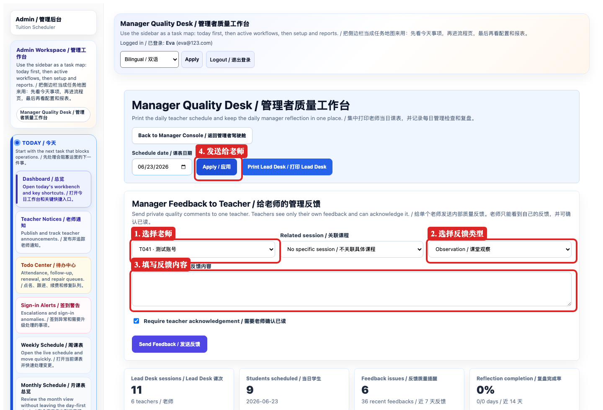
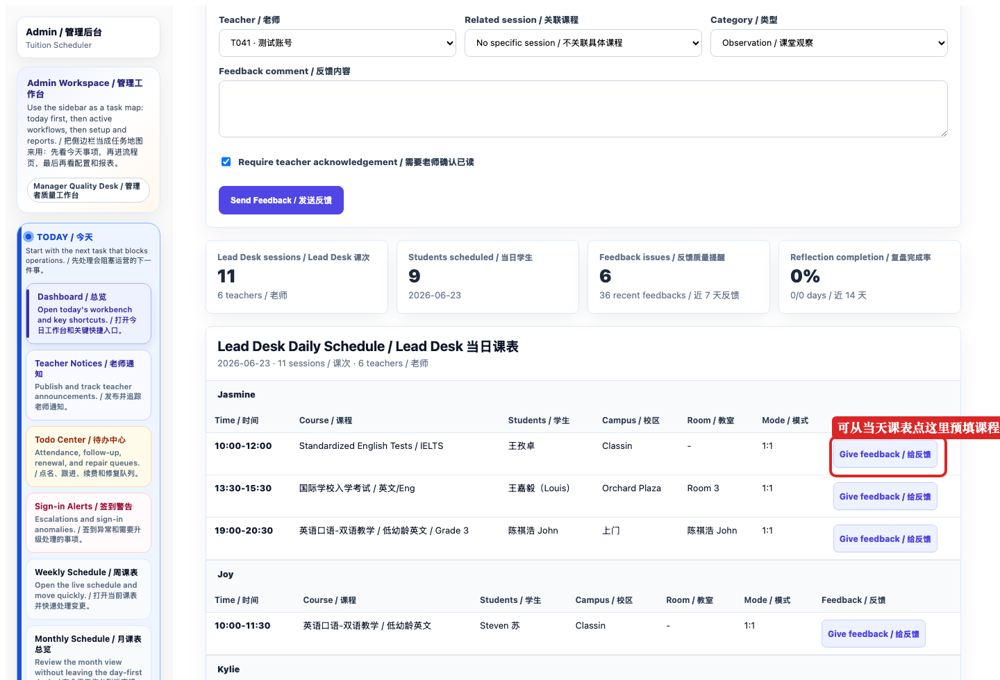
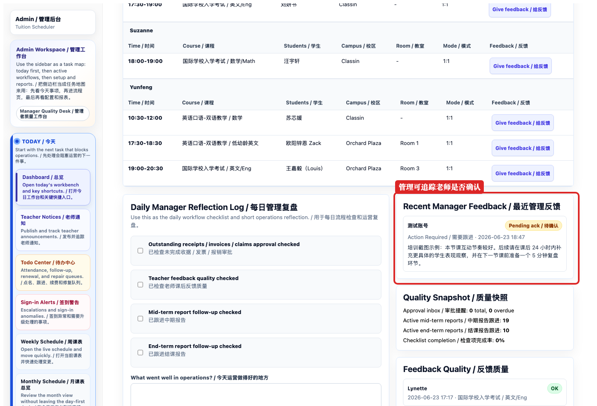
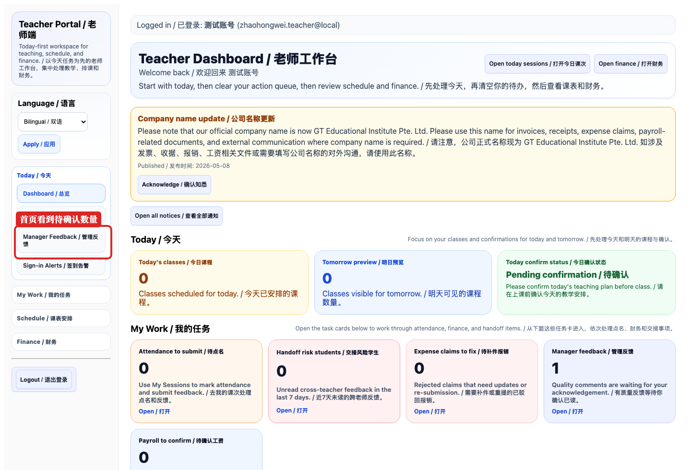
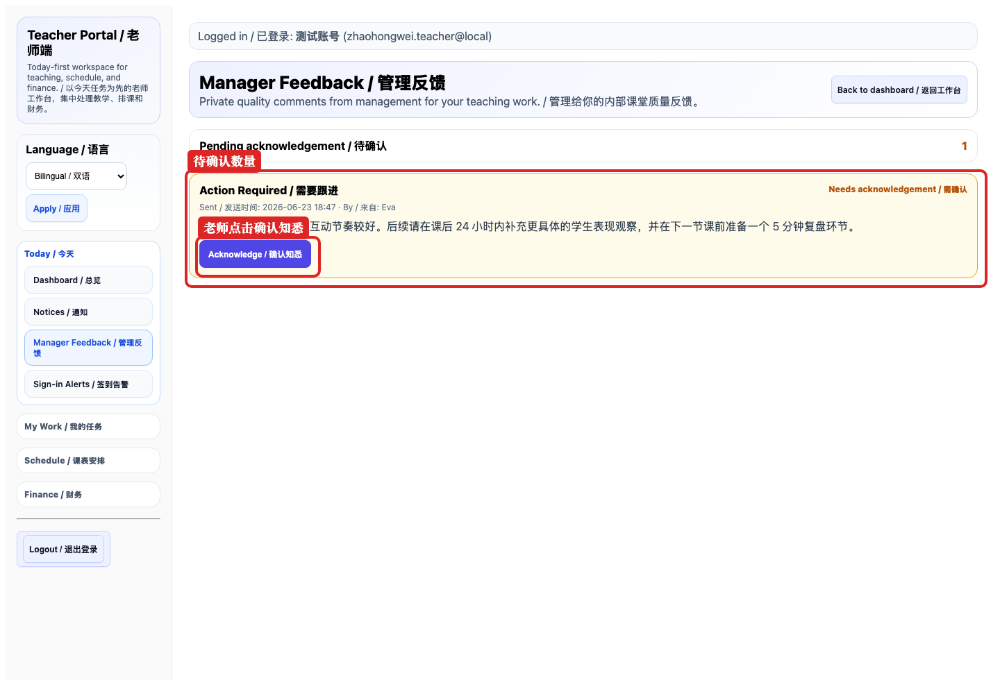

适用对象：管理者、教务管理、老师。用途：管理在质量检查后，把课堂观察、表扬、改进建议或需要跟进的事项发送给指定老师；老师在老师端查看并确认已读。
管理端发送反馈: /admin/manager/quality
老师端查看反馈: /teacher/manager-feedback
老师首页入口: /teacher 的 Manager feedback / 管理反馈 卡片
不要在这里填写家长投诉原文、学生敏感隐私、财务付款问题、老师工资争议、排课改动指令。需要排课或财务处理时，请回到对应系统流程。
本 SOP 的截图由 Playwright 从 SGT Manage 系统页面捕获，并用红框标注关键按钮和区域。截图使用临时登录 session，不展示密码或 session token。
管理端：Eva/Admin 管理账号。
老师端：测试老师账号。
老师端截图使用培训示例反馈，截图完成后已从数据库删除，不保留业务记录。
截图里红框标的是“要看哪里、点哪里、填哪里”。实际使用时，管理应选择真实老师和真实课堂反馈内容；老师只需要进入自己的老师端查看。

| 类型 | 什么时候用 |
|---|---|
| Praise / 表扬 | 课堂亮点、学生互动好、节奏好、老师处理得好。 |
| Improvement / 改进建议 | 希望老师调整节奏、反馈质量、课堂管理或作业安排。 |
| Action Required / 需要跟进 | 需要老师明确完成某件事，例如补充反馈、调整下节课计划。 |
| Observation / 课堂观察 | 记录观察，不一定要求立即行动。 |
如果选择 Action Required / 需要跟进，内容里必须写清楚“老师要做什么”和“什么时候完成”，否则老师看完不知道下一步。

课堂观察：
本节课整体情况是……
做得好的地方：
……
需要改进的地方：
……
建议下一步：
请在之后的课程中注意……
Class observation:
...
What went well:
...
Improvement point:
...
Next action:
...
默认勾选 Require teacher acknowledgement / 需要老师确认已读。如果是重要反馈、需要跟进、或管理希望确认老师已经看到，请保留勾选。如果只是普通内部记录，可以取消。
不要只写“请注意课堂质量”。建议写成：“下节课请增加 5 分钟复盘，并在课后反馈里补充学生具体错题/薄弱点。”



系统第一版只支持“确认知悉”，不支持在线回复。如果老师需要解释或沟通，请在线下或微信回复管理。管理如需记录后续结果，可以再发一条新的管理反馈。
当前第一版没有前台删除按钮。请不要继续让老师处理错误反馈，先联系系统管理员处理数据；后续版本可再增加归档/撤回功能。
不要直接把管理反馈截图发给家长。需要家长知道的内容，应重新整理成家长可读的课后反馈或沟通话术。
管理反馈可以写“下节课建议……”，但真正改课、取消课、换老师，仍必须走排课或教务流程。
管理反馈是内部质量管理记录，不是家长沟通文本。发给家长前必须重新整理。
如果选择 Action Required，但没有写“做什么/什么时候做”，老师无法执行。
发送前再次确认老师姓名和关联课程，尤其是同名或相似英文名老师。
如果要求确认，老师必须点击 Acknowledge / 确认知悉。管理端才能看到状态变化。
管理反馈负责“内部教学质量沟通”；家长反馈负责“对外课堂沟通”；排课/财务问题回到各自系统流程。
本 SOP 对应系统版本：`2026-06-23-r199`。第一版功能包含发送、查看、确认已读；暂不包含老师在线回复、管理撤回、批量发送或统计报表。